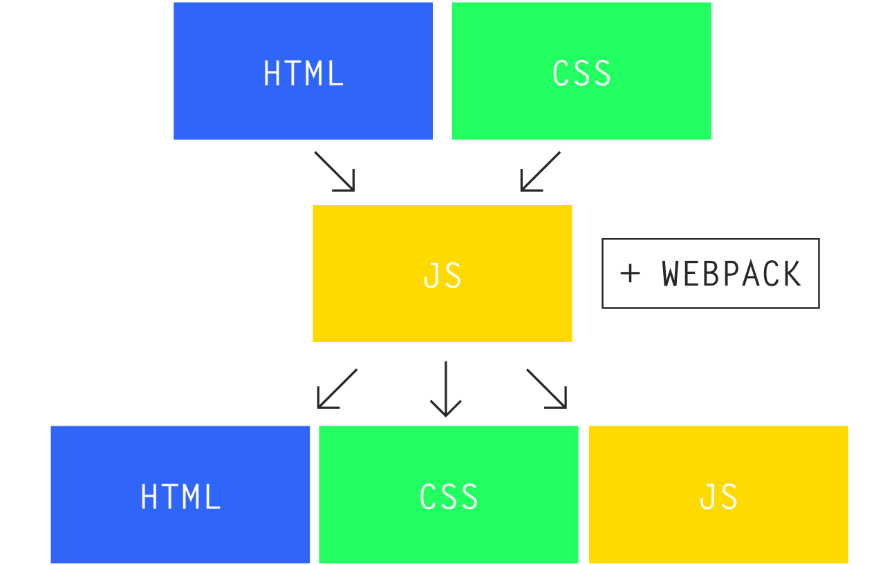

开发者项目开发准备
目录结构
顶层目录
- build 构建相关的配置和文件
- client 客户端相关的内容，此项目为网页相关的内容
- config 项目的配置
- dist 生成内容
- docs 项目相关文档
- scripts 一些辅助脚本
- server 服务端程序
- static 静态文件的存放位置
- test 测试
- views 模板文件
client 目录
- assets 一些前端使用静态文件，如图片
- components 一些无副作用的组件
- containers 一些由副作用的组件
server 目录
- boot 启动 server 时做处理，可能会去掉
- helper 公用的辅助代码
- middlewares 中间件
- routes server 端路由
- service 独立的 service，提供某种服务，例如登陆登出
test 目录
- e2e 集成测试
- unit 单元测试
如何使用
{
"dev": "nodemon --watch server server/main.js",
"start": "cross-env NODE_ENV=production node server/main.js",
"build": "node build/build.js",
"unit": "cross-env BABEL_ENV=test karma start test/unit/karma.conf.js --single-run",
"unit-ci": "cross-env BABEL_ENV=test karma start test/unit/karma.conf.js",
"e2e": "node test/e2e/runner.js",
"test": "npm run unit && npm run e2e",
"lint": "eslint --ext .js,.vue client server test/unit/specs test/e2e/specs"
}
选型和工具
- vue
- scss (stylus 或 cssnext)
- es6, es7
代码规范
- markdown
- javascript
- css
markdown
- 标题和段落之间隔一行
- 标题和之标题之间隔一行
- 同级标题之间隔两行
- 标题和表示标题大小的 # 之间存在一个空格，引用同样
- 不要跨级使用标题
- 英文和中文之间加空格
- 数字和中文之间加空格
- 全角标点和其他字符之间不加空格
JavaScript and CSS
- 2 空格缩进
- 使用 lf 作为换行符
- utf-8 编码
- 行尾不要有空白符
- 文件结尾可有唯一空行
- Airbnb JavaScript Style Guide
- BEM （可以考虑使用其他方案）
工具
- editorconfig
- eslint
webpack
与 gulp 和 grunt 的区别
自身的定位
grunt: The JavaScript Task Runner
gulp: The streaming build system
webpack: A module bundler
gulp 和 grunt 如何处理资源

webpack 如何处理资源
webpack 是什么
webpack is a module bundler. Its main purpose is to bundle JavaScript files for usage in a browser, yet it is also capable of transforming, bundling, or packaging just about any resource or asset.
资源的打包器

webpack 基础
entry
webpack 根据依赖形成依赖图，图的入口称为 entry point。webpack 使用 entry 定义 entry point。
output
处理 webpack 打包好的内容
path: 绝对路径
filename: 小心路径问题
loader
webpack 将每一个文件视为一个模块，但是 webpack 只理解 JavaScript，需要使用 loader 将这些文件转换为模块
plugin
loader 用来转换文件，其他的工作则交由 plugin 处理
Example
const HtmlWebpackPlugin = require('html-webpack-plugin'); //installed via npm
const webpack = require('webpack'); //to access built-in plugins
const path = require('path');
const config = {
entry: './path/to/my/entry/file.js',
output: {
path: path.resolve(__dirname, 'dist'),
filename: 'bundle.js'
},
module: {
rules: [
{test: /\.(js|jsx)$/, use: 'babel-loader'}
]
},
plugins: [
new webpack.optimize.UglifyJsPlugin(),
new HtmlWebpackPlugin({template: './src/index.html'})
]
};
module.exports = config;
Git
git 不是什么
Github，没有权限控制等功能
git 是什么
分布式版本控制系统，追踪文件
本地仓库与远程仓库

stage 策略

工作模式
- Centralized 工作模式
- Feature Branch 工作模式
- Gitflow 工作模式
- Forking 工作模式
Centralized 工作模式

Feature Branch 工作模式

Gitflow 工作模式

Forking 工作模式

Git commit message
format 1
<subject> <body> <footer>
Summarize changes in around 50 characters or less More detailed explanatory text, if necessary. Wrap it to about 72 characters or so. In some contexts, the first line is treated as the subject of the commit and the rest of the text as the body. The blank line separating the summary from the body is critical (unless you omit the body entirely); various tools like `log`, `shortlog` and `rebase` can get confused if you run the two together. Explain the problem that this commit is solving. Focus on why you are making this change as opposed to how (the code explains that). Are there side effects or other unintuitive consequences of this change? Here's the place to explain them. Further paragraphs come after blank lines. - Bullet points are okay, too - Typically a hyphen or asterisk is used for the bullet, preceded by a single space, with blank lines in between, but conventions vary here If you use an issue tracker, put references to them at the bottom, like this: Resolves: #123 See also: #456, #789
format 2
<type>(<scope>): <subject>
<body>
<footer>
fix(middleware): ensure Range headers adhere more closely to RFC 2616 Added one new dependency, use `range-parser` (Express dependency) to compute range. It is more well-tested in the wild. Fixes #2310
- 50 个字符以内
- 主题行大写开头
- 主题行不要以句号结尾
- 主题行中使用祈使句
- 正文在 72 个字符出这行
- 使用正文解释 是什么 和 为什么 而不是 怎么样
git config --global core.eof lf
git config --global core.autocrlf input # 检出时不转换换行符
git config --global core.safecrlf true # 不允许混合换行符